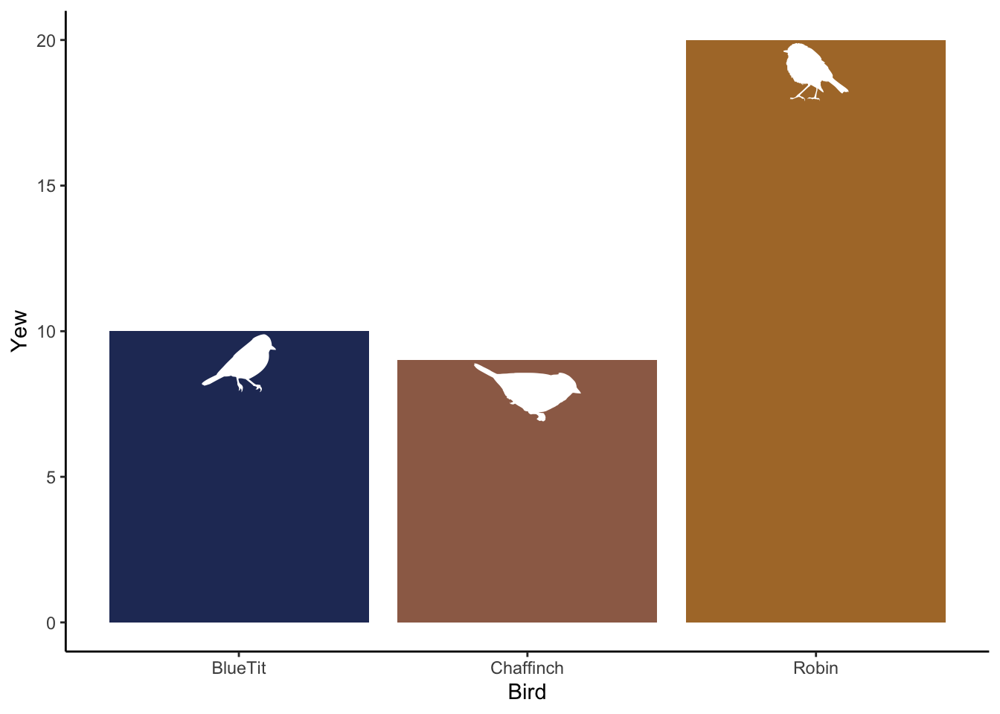

Data visualization challenge! We’re going to use rphylopic (Gearty and Jones 2023) to find silhouettes of our study species and add them to a ggplot figure.
For this challenge, you’ll need the following packages:
tidyverserphylopicwiqid(for bird abundance data)
Make sure to install any you don’t have.
The challenge
Load packages and data
library(rphylopic)
library(tidyverse)
library(wiqid)
data(KillarneyBirds)Tidy the data
Explore the data, e.g., with view() or glimpse(). Notice how the bird names aren’t in their own column? Use tibble::rownames_to_column() to fix that.
Find silhouettes
Find silhouettes for the chaffinch, robin, and blue tit. Use rphylopic::pick_phylopic(). This is an interactive way to find silhouettes for your study species.
Create figure
- Plot chaffinch, robin, and blue tit abundances in Yew habitat. Use a column plot and
theme_classic(). For your column fills, use chaffinch = #9D6C56, robin = #AE7834, and blue tit = #263765. Hint: usescale_fill_manual(). - Add phylopics on inside top of columns. Make them white so they stand out. Use
rphylopic::add_phylopic().- Hint 1: use parameters x, y, ysize, and fill
- Hint 2: You can use text for x position and you can calculate y position from the data.
- That’s about it! To clean it up, rename the x-axis to “Bird” and remove the legend.
References
Gearty, William, and Lewis A. Jones. 2023. “Rphylopic: An r Package for Fetching, Transforming, and Visualising PhyloPic Silhouettes.” Methods in Ecology and Evolution 14 (11): 2700–2708. https://doi.org/10.1111/2041-210X.14221.